Publications
Full list also available on Google Scholar and ORCID. (‡ denotes equal contribution)
-
Cross-Facility Materials Discovery Platform: Integrating Heterogeneous Data and Automated Experimental Pipelines into High-Throughput Workflows
T. Kodalle‡, F. Roncoroni‡, D. P. McCarthy‡, M. K. Wall, Y. Wang, A. Gashi, M. B. Alghalayini, W. Koepp, A. Hexemer, C. Zhu, O. Kostko, B. A. Helms, E. S. Barnard, and C. M. Sutter-Fella
ChemRxiv (Preprint), 2026
DOI -
Selective, Catalytic Oxidation of Polyethylene Surfaces
C. P. Woroch, L. Klivansky, D. P. McCarthy, H. Miao, Z. Fink, X. Zuo, C. Guthrie, C. Wang, B. A. Helms, and J. F. Hartwig
Nature, 2026
DOI -
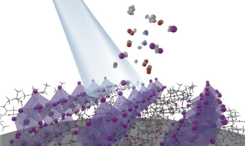
Extreme Ultraviolet Light-Triggered Reaction Cascades in Hybrid Metal Halide Photoresists
D. P. McCarthy, H. Im, M. Lloyd, K. Coda, Y. Wang, R. F. Moral, C. M. Sutter-Fella, C. K. Ober, R. A. Segalman, R. Ruiz, S. J. Teat, C. Zhu, J. Zhang, O. Kostko, and B. A. Helms
ChemRxiv (Preprint), 2026
DOI -
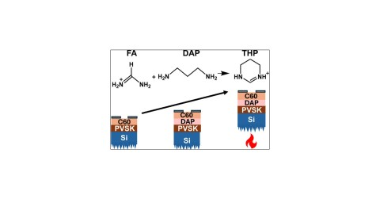
Diamine Surface Passivation and Postannealing Enhance the Performance of Silicon-Perovskite Tandem Solar Cells
M. Taddei, H. Contreras, H.-N. Doan, D. P. McCarthy, S. Seo, R. J. E. Westbrook, D. J. Graham, K. Datta, P. Carroy, D. Muñoz, J.-P. Correa-Baena, S. Barlow, S. R. Marder, J. A. Smith, H. J. Snaith, and D. S. Ginger
ACS Applied Materials & Interfaces, 17 (26), 38754–38762, 2025
DOI -
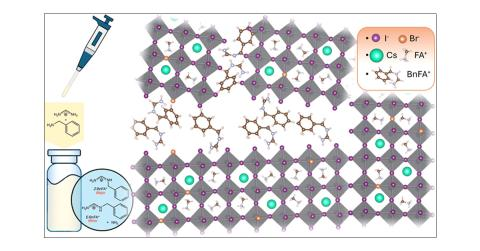
Reactive Passivation of Wide-Bandgap Organic–Inorganic Perovskites with Benzylamine
S. Zhou, B. M. Gallant, J. Zhang, Y. Shi, J. Smith, J. N. Drysdale, P. Therdkatanyuphong, M. Taddei, D. P. McCarthy, S. Barlow, R. C. Kilbride, A. Dasgupta, A. R. Marshall, J. Wang, D. J. Kubicki, D. S. Ginger, S. R. Marder, and H. J. Snaith
Journal of the American Chemical Society, 146 (40), 27405–27416, 2024
DOI -
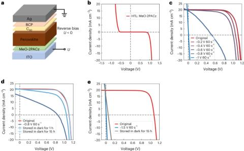
Improved reverse bias stability in p–i–n perovskite solar cells with optimized hole transport materials and less reactive electrodes
F. Jiang, Y. Shi, T. R. Rana, D. Morales, I. E. Gould, D. P. McCarthy, J. A. Smith, M. G. Christoforo, M. Y. Yaman, F. Mandani, T. Terlier, H. Contreras, S. Barlow, A. D. Mohite, H. J. Snaith, S. R. Marder, J. D. MacKenzie, M. D. McGehee, and D. S. Ginger
Nature Energy, 9, 1275–1284, 2024
DOI -
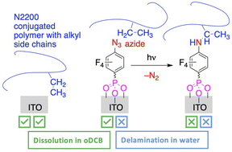
Reducing delamination of an electron-transporting polymer from a metal oxide for electrochemical applications
A. A. Mohapatra, W. K. Yual, Y. Zhang, A. A. Samoylov, J. Thurston, C. M. Davis, D. P. McCarthy, A. D. Printz, M. F. Toney, E. L. Ratcliff, N. R. Armstrong, A. L. Greenaway, S. Barlow, and S. R. Marder
Chemical Communications, 60, 988–991, 2024
DOI -
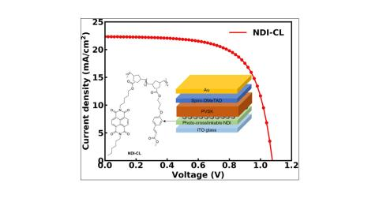
Photo-Crosslinkable Naphthalene Diimide Polymer for Solution-Processed n–i–p Perovskite Solar Cells
Y. Shi‡, D. P. McCarthy‡, D. Lungwitz, F. Jiang, M. Taddei, H. Contreras, Y. Lin, A. A. Mohapatra, K. Tang, Y. Zhang, S. Barlow, A. Kahn, S. R. Marder, and D. S. Ginger
Chemistry of Materials, 36 (2), 795–802, 2024
DOI -
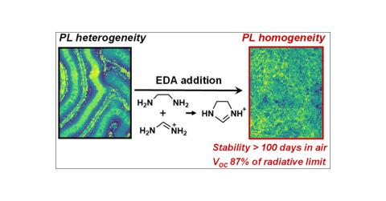
Ethylenediamine Addition Improves Performance and Suppresses Phase Instabilities in Mixed-Halide Perovskites
M. Taddei, J. A. Smith, B. M. Gallant, S. Zhou, R. J. E. Westbrook, Y. Shi, J. Wang, J. N. Drysdale, D. P. McCarthy, S. Barlow, S. R. Marder, H. J. Snaith, and D. S. Ginger
ACS Energy Letters, 7, 4265–4273, 2022
DOI -
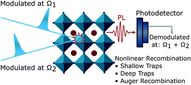
Nonlinear photocarrier dynamics and the role of shallow traps in mixed-halide mixed-cation hybrid perovskites
D. A. Valverde-Chávez, E. Rojas-Gatjens, J. Williamson, S. Jariwala, Y. Shi, D. P. McCarthy, S. Barlow, S. R. Marder, D. S. Ginger, and C. Silva-Acuña
Journal of Materials Chemistry C, 9, 8204–8212, 2021
DOI -
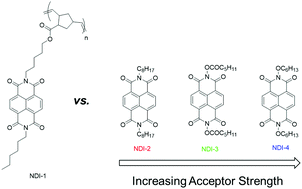
A naphthalene diimide side-chain polymer as an electron-extraction layer for stable perovskite solar cells
K. Al Kurdi, D. P. McCarthy, D. P. McMeekin, S. O. Furer, M.-H. Tremblay, S. Barlow, U. Bach, and S. R. Marder
Materials Chemistry Frontiers, 5, 450–457, 2021
DOI -
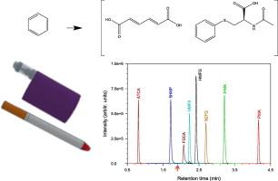
Development of a UPLC-ESI-MS/MS method to measure urinary metabolites of selected VOCs: Benzene, cyanide, furfural, furfuryl alcohol, 5-hydroxymethylfurfural, and N-methyl-2-pyrrolidone
D. Bhandari, D. P. McCarthy, C. Biren, C. S. Movassaghi, B. C. Blount, and V. R. De Jesús
Journal of Chromatography B, 1126–1127, 121746, 2019
DOI -
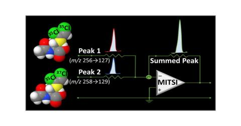
Multiple Ion Transition Summation of Isotopologues for Improved Mass Spectrometric Detection of N-Acetyl-S-(1,2-dichlorovinyl)-L-cysteine
C. S. Movassaghi, D. P. McCarthy, D. Bhandari, B. C. Blount, and V. R. De Jesús
Journal of the American Society for Mass Spectrometry, 30, 1213–1219, 2019
DOI

Peer Review Activity
- Journal of Micro/Nanopatterning, Materials, and Metrology (JM3) — 2026 (1 article)
- Journal of the American Chemical Society (JACS) — 2024 (1 article)